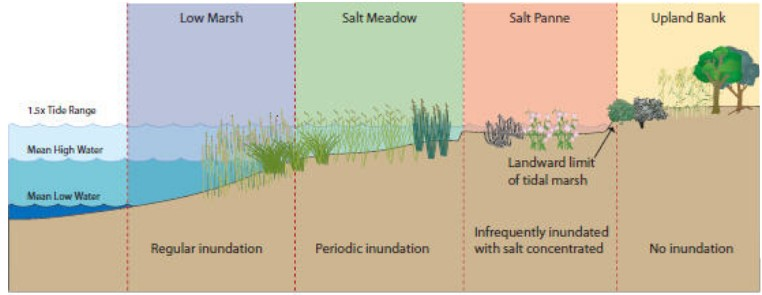

Design Problem
Background
The design site is an area in Norfolk that experiences significant tidal and stormwater flooding. Our goal is to develop and integrate a natural managment solution to protect infrastructure and provide ecosystem services, all while adapting to changing salinity and sea levels.
Problem Statement
A series of BMPs to manage stormwater and tidal inundation will be designed for integration into the existing landscape to protect infrastructure and property. The design will be resilient, able to adapt to rising sea levels and increasing salinity.

Goals and Objectives:
G1: Reduce tidal and stormwater flooding
O1: Provide storage and tidal buffer areas
G2: Transition to marshland buffer zone after design life of project
O2: Grade wetland areas to allow for upland retreat as water table rises
G3: Reduce sediment and chemical pollutant delivery
O3: Use natural methods of capture and uptake such as wetlands and settling ponds
G4: Create community green space
O4: Incorporate community amenities such as parks and play fields into site design
G5: Provide habitat for native wildlife
O5: Design site microtopography to support diverse plant communities providing habitat variation